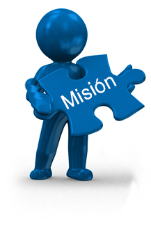

Misión
Coordinador, orientador, facilitador, planificador y ejecutor de
acciones mancomunadas con gobiernos locales, instituciones públicas, privadas
y organizaciones sociales, en los niveles: parroquiales, cantonales, provincial,
nacional e internacional; con el fin de impulsarlas iniciativas de desarrollo económico, social, ambiental
y territorial de Tungurahua.

Visión
Consolidar una provincia intercultural, solidaria, demográfica, participativa,
inclusiva, productiva, sustentable, en armonía y respeto con
la naturaleza, con plena vigencia de la justicia social, equidad de género y generacional.